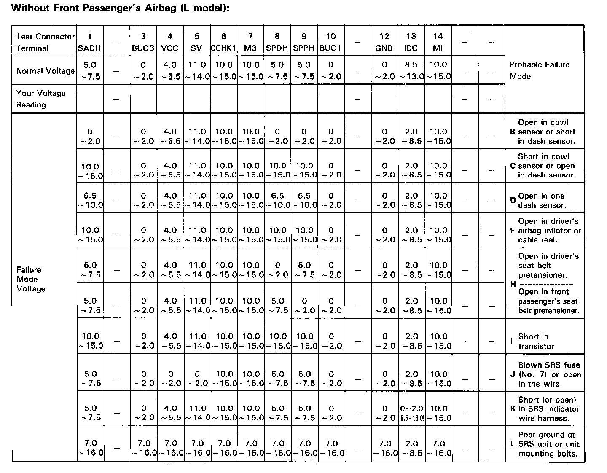
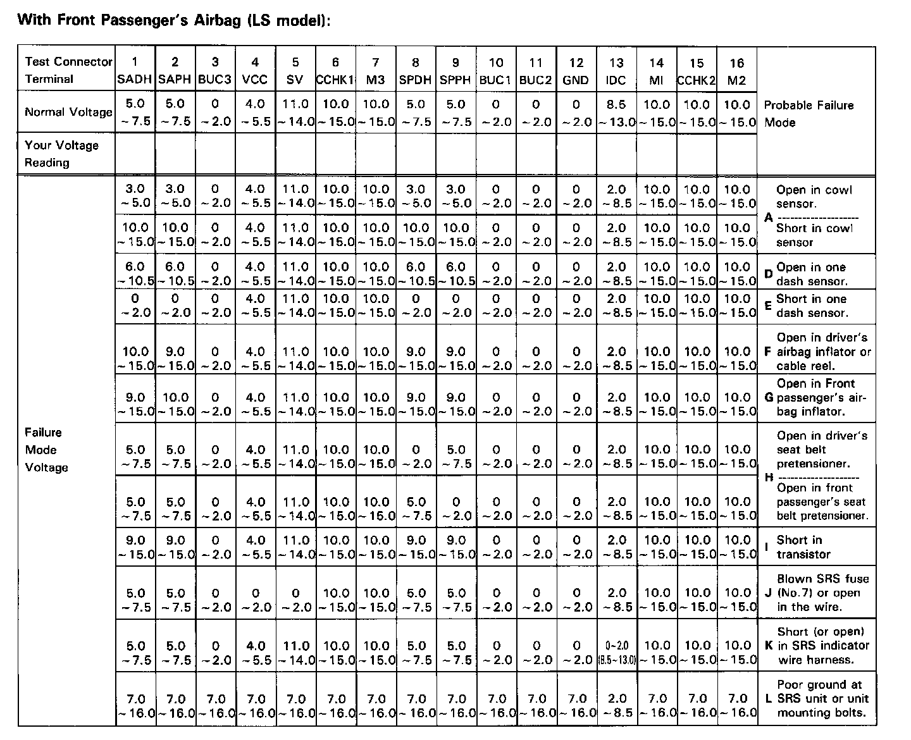
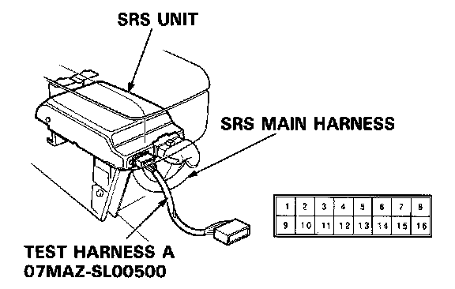
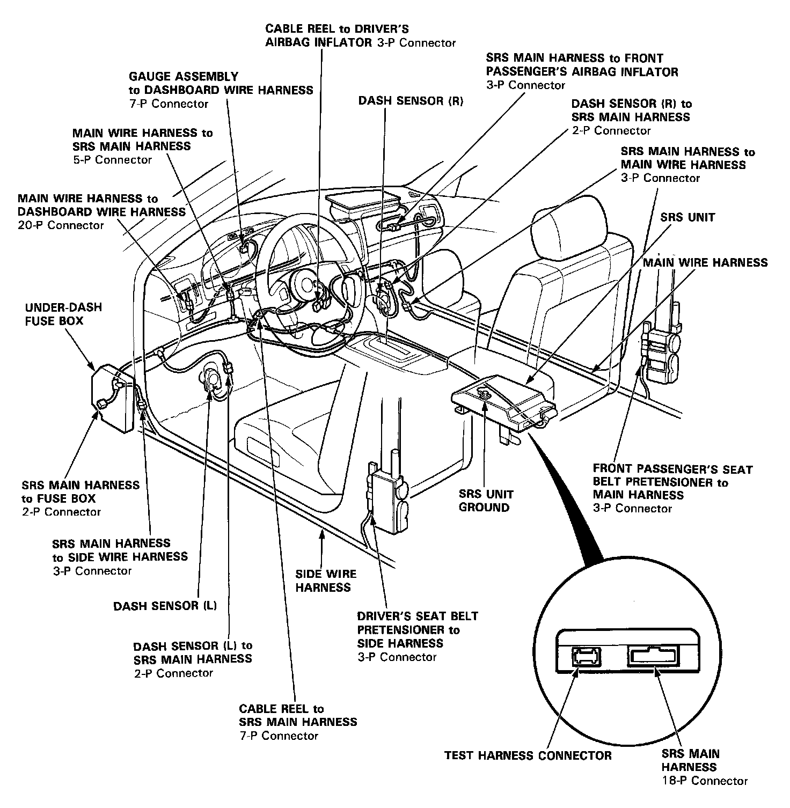

Indicator Stays on Continuously
SRS Indicator Light Stays On Continuously
Without Front Passenger's Airbag (L model):

With Front Passenger's Airbag (LS model):

1. Print a copy of the appropiate chart (for L or LS).

2. Connect test harness A to the SRS unit as shown.
3. Turn the ignition switch ON.
- Voltages in the chart assume the car's "battery voltage" is about 12 volts. Less than 12 volts will result in different or possibly false readings.
- Do not disconnect the airbag(s) from the circuit when checking SRS unit voltages.
4. Record your voltage readings, for each terminal, in the row of blank boxes across the top of the chart.
5. Compare each reading with the voltage ranges listed in the column below it. If the reading is within a range, circle that range.
- If you circled all the Failure Mode ranges across any row, check the car for the Probable Failure Mode listed at the end of that row. (Refer to that failure mode's diagnostic procedure).
- If you did not circle all the ranges across any row, replace the SRS control unit with a known-good unit, and retest.
- If all your voltage readings are now Normal, replace the SRS control unit.
- If your voltage readings are still not Normal, but they don't fit within a complete row of Failure Mode ranges, check the condition of the terminals in each of the SRS connectors shown in the Wiring Locations diagram.

Wiring Locations